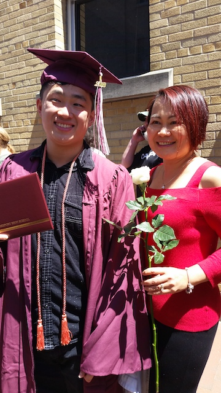
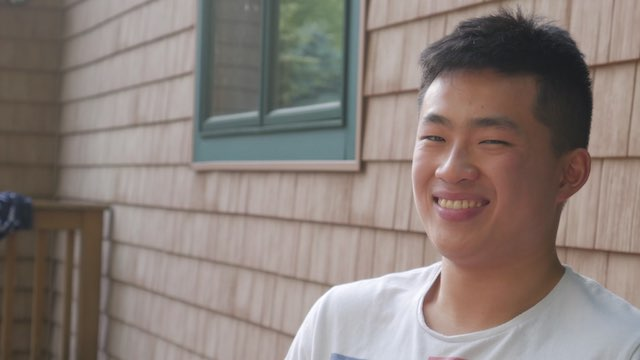

So, as stated previously, my name is Dylan Lieu. I was born in 1999 and I'm from Freeport, Maine, USA. The town I'm from, Freeport, is a small one. However, we're known for being the hometown of L.L. Bean. During my childhood, I grew up with two older brothers by the names of Daniel and Darren. I graduated from Freeport High School in the class of 2018.
As of typing this, I'm currently enrolled at the University of Maine and am expecting to graduate in 2022. One of my favorite classes at UMaine is BUA 235 which is taught by Dr. Tanya Beaulieu. In BUA 235, we work with programs such as Microsoft Excel and coding in html. I'm also in the sports club ultimate frisbee at UMaine and enjoy playing video games such as Super Smash Brothers Ultimate on the Nintendo Switch.
